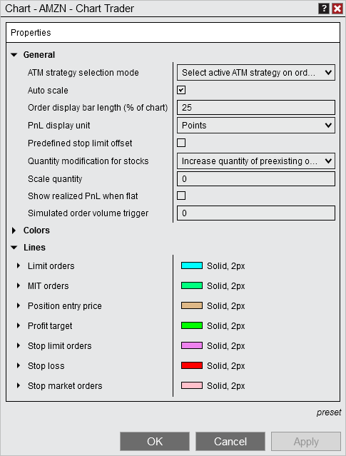
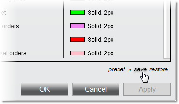

|
<< Click to Display Table of Contents >> Chart Trader Properties |


|
Chart Trader Properties
|
<< Click to Display Table of Contents >> Chart Trader Properties |
|
Many of the visual display settings of Chart Trader can be customized using the Chart Trader Properties window.
 How to access the Chart Trader Properties window
How to access the Chart Trader Properties window
To access the Chart Trader Properties window:
1.Right mouse click within the Chart Trader panel 2.Select the Properties menu item |
 Available properties and definitions
Available properties and definitions
The following Chart Trader properties are available for configuration within the Chart Trader Properties window:

|
 How to set the default properties
How to set the default properties
Once you have your Chart Trader properties set to your liking, you can left mouse click on the preset text, then click the save option to save these properties as default.

If you change your settings and later wish to go back to the original settings, you can left mouse click on the preset text, then click the restore option. |